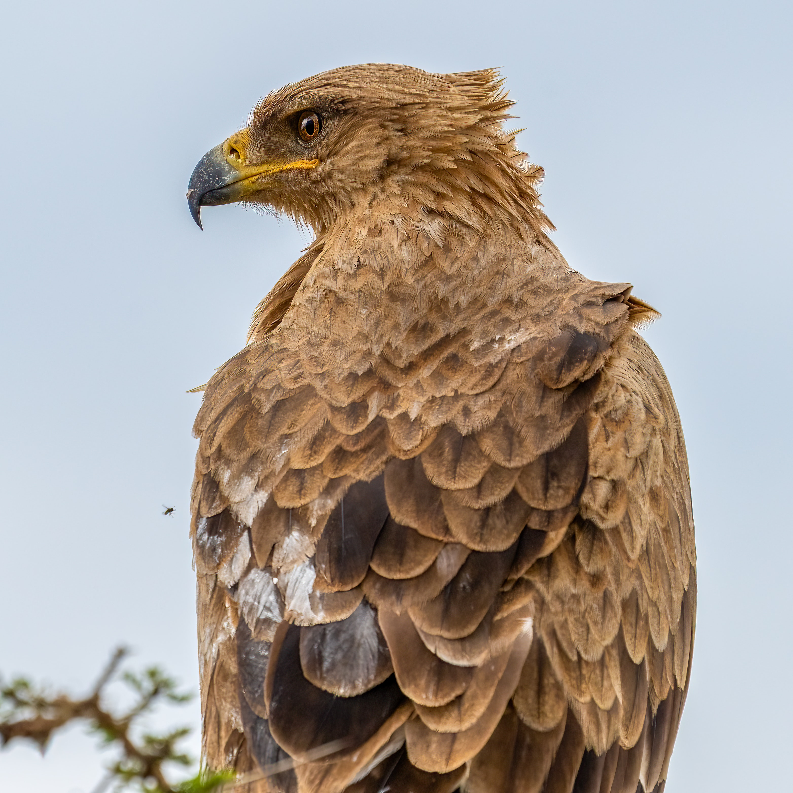

Groups
Hawks and Eagles
Family and Classification
Hawks and eagles belong to the family Accipitridae, which also includes other birds of prey such as kites, harriers, and Old World vultures. They are classified within the order Accipitriformes.
Size and Appearance
Hawks and eagles come in a range of sizes, with some species being small and others being large. Eagles are generally larger than hawks. The smallest hawk species, such as the sharp-shinned hawk, can have a wingspan of around 20 inches (50 cm), while the largest eagle species, such as the Steller's sea eagle, can have a wingspan of up to 8 feet (2.4 meters). They typically have hooked beaks, strong talons, and keen eyesight.
Hunting and Feeding
Hawks and eagles are carnivorous birds that primarily feed on other animals. Their diet consists mainly of small to medium-sized mammals, birds, reptiles, and occasionally fish. They use their sharp talons and powerful beaks to capture and kill their prey. Hawks are known for their agility and ability to maneuver through wooded areas, while eagles often soar at high altitudes, scanning the ground for potential prey.
Habitat and Distribution
Hawks and eagles can be found in a wide range of habitats, including forests, grasslands, mountains, wetlands, and coastal areas. They have a global distribution and can be found on every continent except Antarctica. Different species have adapted to specific habitats, and their distribution varies depending on the availability of suitable prey and nesting sites.
Nesting and Breeding
Hawks and eagles build large nests, known as eyries, in trees, cliffs, or other elevated locations. They mate for life and typically return to the same nesting site each breeding season. The female lays a clutch of eggs, and both parents take turns incubating them. After hatching, the chicks are fed by the parents until they are old enough to leave the nest and learn to hunt on their own.
Migration
Some hawk and eagle species are migratory, undertaking long-distance journeys between their breeding and wintering grounds. They use thermals, rising columns of warm air, to gain altitude and conserve energy during migration.
Conservation Status
The conservation status of hawks and eagles varies depending on the species and their specific threats. Some species, such as the bald eagle in North America, have made successful recoveries from previous declines due to habitat loss and pesticide use. However, other species still face significant conservation challenges, including habitat destruction, illegal hunting, and electrocution from power lines.
Hawks and eagles are iconic birds of prey that inspire awe with their hunting prowess and aerial acrobatics. Their ecological importance, stunning appearances, and impressive adaptations make them a fascinating group of birds to study and appreciate.
Falcons
Family and Classification
Falcons belong to the family Falconidae, which includes over 60 species worldwide. They are classified within the order Falconiformes.
Size and Appearance
Falcons come in a range of sizes, with some species being small and others being medium-sized. The smallest falcon species, such as the American kestrel, can have a wingspan of around 20 inches (50 cm), while the largest falcon species, such as the gyrfalcon, can have a wingspan of up to 4 feet (120 cm). Falcons typically have long, pointed wings, slender bodies, and hooked beaks that are adapted for capturing and killing prey in flight.
Hunting and Feeding
Falcons are renowned for their aerial hunting skills. They are highly specialized in catching birds in mid-flight, often utilizing high-speed stoops or dives to capture their prey. Falcons have excellent vision and can spot their prey from great distances. They feed primarily on small to medium-sized birds, such as pigeons, doves, songbirds, and waterfowl.
Habitat and Distribution
Falcons are found in diverse habitats worldwide, including grasslands, deserts, mountains, coastal areas, and even urban environments. Different species have adapted to specific habitats and may exhibit some level of habitat specialization. Falcons have a global distribution and can be found on every continent except Antarctica.
Nesting and Breeding
Falcons typically build nests on cliffs, ledges, or in trees. However, some species, like the peregrine falcon, may also use man-made structures such as skyscrapers and bridges. They mate for life, and both parents participate in incubating the eggs and raising the chicks. Falcons usually lay a small clutch of eggs, and the young birds, called eyasses, are cared for by their parents until they fledge and become independent.
Falconry
Falcons have a long history of being used in falconry, which is the art of training birds of prey to hunt in partnership with humans. Falconry has been practiced for thousands of years and is still carried out in various parts of the world as a cultural tradition and sport.
Conservation Status
The conservation status of falcon species varies, with some facing significant conservation challenges. The peregrine falcon, for example, experienced population declines due to pesticide use in the mid-20th century but has made a remarkable recovery following conservation efforts. Other falcon species may be threatened by habitat loss, illegal hunting, and disturbance to their nesting sites.
Falcons are celebrated for their incredible speed, aerial prowess, and unique hunting strategies. Their adaptations for high-speed flight and precision hunting make them fascinating and iconic birds of prey. Conservation efforts focused on protecting their habitats, minimizing human disturbance, and addressing specific threats are essential to ensure the survival and well-being of falcon populations.